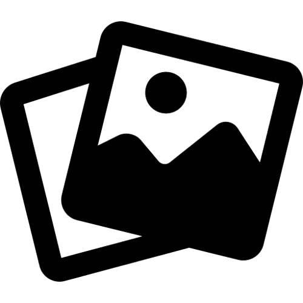

DJ WLZIN 062
SEGUE NAS REDES SOCIAIS
Abaixo você tem acesso a todas as minhas redes sociais.
Redes Sociais

Clique para falar direto no WhatsApp.
PRESSKIT DJ WLZIN 062

Abrir Presskit (Google Drive)
Baixe materiais oficiais, logos e fotos.
Informações rápidas
- Gênero musical: Eletrofunk / Funk
- Duração do set: 1h a 2h
- SOU DE: Goiás (062)
🎧 Rider Técnico – DJ WLZIN 062 (clique para abrir)
Gênero Musical: Eletrofunk / Funk
Duração do Set: 1h ou até 2h
50% DO CACHE ADIANTADO, CDJ OU CONTROLADORA,MESA, 2 GARRAFA DE ÁGUA